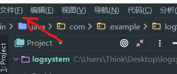
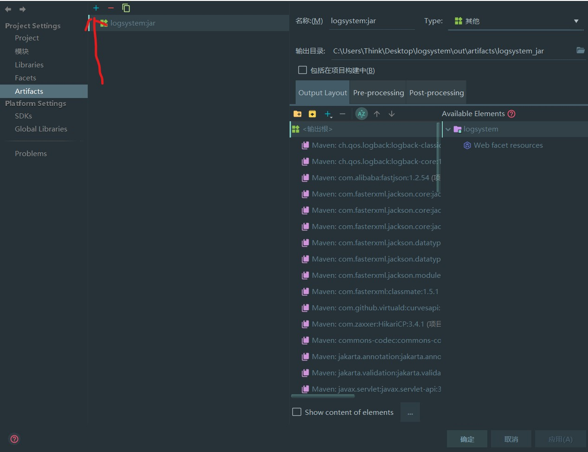
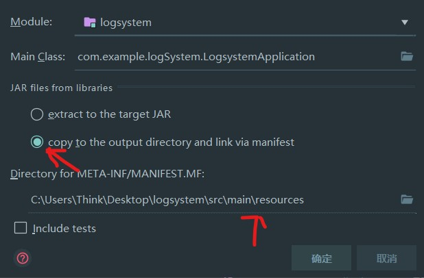
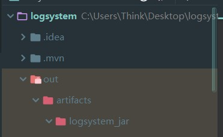
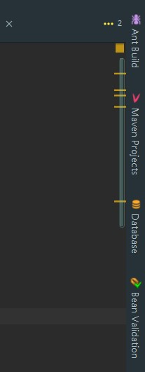
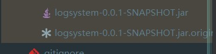

Spring Boot目前流行的java web应用开发框架，相比传统的spring开发，spring boot极大简化了配置，并且遵守约定优于配置的原则即使0配置也能正常运行，这在spring中是难以想象的。spring boot应用程序可以独立运行，框架内嵌web容器，使得web应用程序可以像本地程序一样启动和调试，十分的方便，这种设计方式也使得spring boot应用程序非常适合容器化进行大规模部署。生态方面，spring boot提供了非常丰富的组件，目前流行的java web框架基本都有spring boot版本，生态十分庞大，是目前java web开发最好的方案。
打包方式一般有三种
- jar打包
- war打包
- 系统自带的Maven打包
这这篇主要讲的是jar打包以及Maven
springboot tomcat
因为Spring-boot内部自带tomcat，所以打包的时候可以选择两种：1.使用自带的tomcat服务器 2.使用外部的tomcat服务器
如果选择使用外部的tomcat服务器的话，我们可以进行直接打包，如果选择使用内部的tomcat服务器的话，我们可以在pom.xml中将自带的tomcat进行注释，仅在运行中使用，打包的话自动移除tomcat服务器
1 | <dependency> |
2 | <groupId>org.springframework.boot</groupId> |
3 | <artifactId>spring-boot-starter-web</artifactId> |
4 | </dependency> |
5 | <!--移除内嵌的Tomcat--> |
6 | <dependency> |
7 | <groupId>org.springframework.boot</groupId> |
8 | <artifactId>spring-boot-starter-tomcat</artifactId> |
9 | <scope>provided</scope> |
10 | <!-- provided 表明该包只在编译和测试的时候用--> |
11 | </dependency> |
jar打包
点击左上角 file->Project Structure->Artifacts->点击＋号->JAR->From modules with dependencies

可以把没用的maven包删掉

选择MANIFEST.MF一定要选择resources,不要放在java里

之后再选择Build->Build ArtiFacts
构建完后jar在/out/artufacts/你的项目名/下有个叫项目名.jar的包就是了，拿出来放到服务器上就行了

Maven打包

点击 Maven Projects -> Lifecycle -> package

可自动打包在target内

然后就可以利用自己的方法运行了